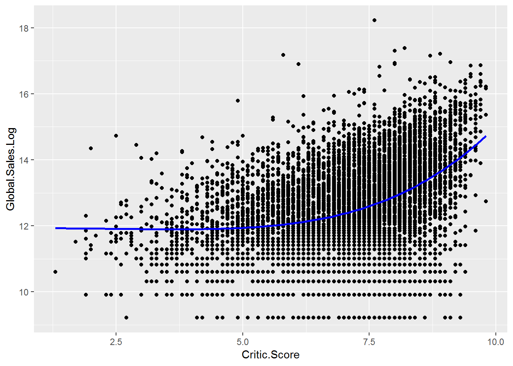
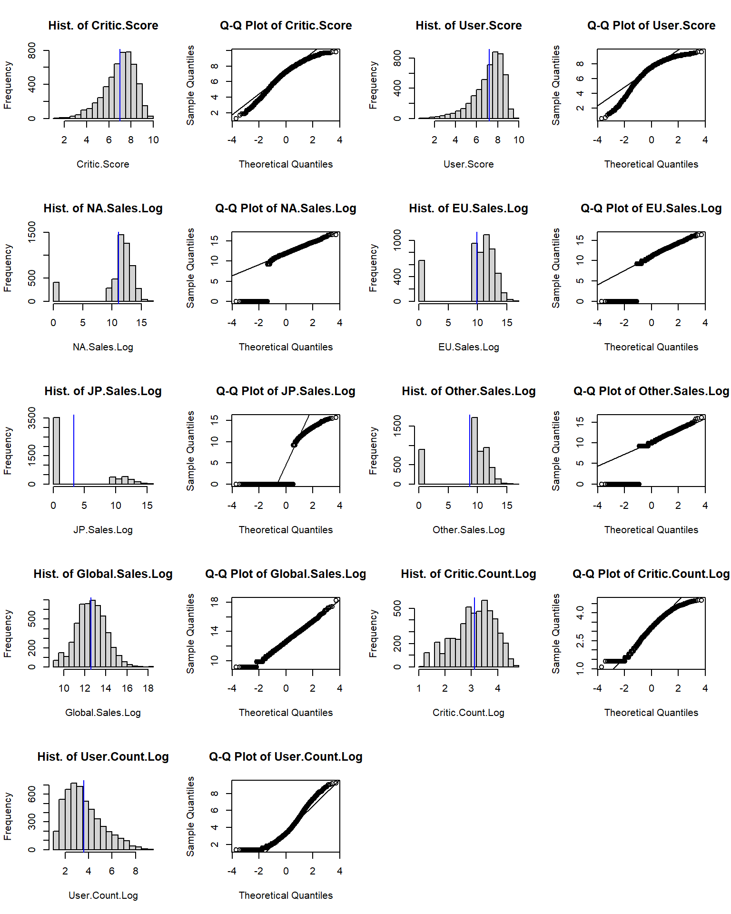
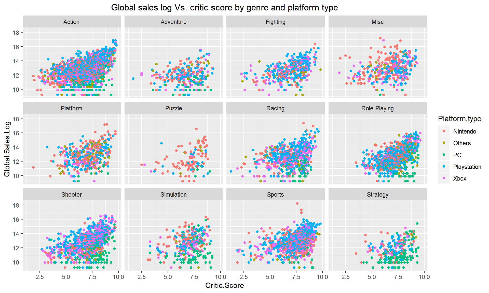
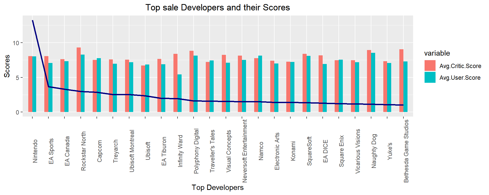

Chapter 9 The game sales dataset
This is a video game sales data including game sales of North America, European, Japan and other area, together they make the global sale. The data also give the information about the critic score, user score and the number of critics or users who gave these two scores. This data was downloaded from https://www.kaggle.com/rush4ratio/video-game-sales-with-ratings#Video_Games_Sales_as_at_22_Dec_2016.csv.
The detail about the data is listed as follow:
Name: Name of the game
Platform: Console on which the game is running
Year_of_Release: Year of the game released
Genre: Game’s category
Publisher: Publisher
NA_Sales: Game sales in North America (in millions of units)
EU_Sales: Game sales in the European Union (in millions of units)
JP_Sales: Game sales in Japan (in millions of units)
Other_Sales: Game sales in the rest of the world, i.e. Africa, Asia excluding Japan, Australia, Europe excluding the E.U. and South America (in millions of units)
Global_Sales: Total sales in the world (in millions of units)
Critic_Score: Aggregate score compiled by Meta critic staff
Critic_Count: The number of critics used in coming up with the Critic_score
User_Score: Score by Metacritic’s subscribers
User_Count: Number of users who gave the user_score
Developer: Party responsible for creating the game
Rating: The ESRB ratings: E for “Everyone”; E10+ for “Everyone 10+”; T for “Teen”; M for “Mature”; AO for “Adults Only”; RP for “Rating Pending”; K-A for kids to adults.
After downloading the data, We replaced N/A with NA first in excel and saved it as csv file and read in. We removed these observations with empty string of Rating and 6825 observations was left in our data set “game”. We noticed that there were lots of sales value with zero. To prepare these variables ready for being taken log value to make them normal or close to normal distribution, we transformed the sales into its basic units and plus 1. We also divided critic score by 10 to march the scale unit of user score.
9.1 Reading in data and manage data
tem <- read.csv("datasets/video-game-sales-at-22-Dec-2016.csv")
tem <- na.omit(tem) #remove NA
library(dplyr)
game <- tem %>% filter(Rating != "") %>% droplevels() #remove empty rating observations
#by multiplying 1000000 we get the actual sale,
#adding 1 makes all sales positive which make log possible for all sales later
game$Year_of_Release <- as.factor(as.character(game$Year_of_Release))
game$NA_Sales <- game$NA_Sales * 1000000 + 1
game$EU_Sales <- game$EU_Sales * 1000000 + 1
game$JP_Sales <- game$JP_Sales * 1000000 + 1
game$Other_Sales <- game$Other_Sales * 1000000 + 1
game$Global_Sales <- game$Global_Sales * 1000000 + 1
# By divide by 10 to make Critic Score the same decimal as User Score
game$Critic_Score <- as.numeric(as.character(game$Critic_Score)) / 10
game$User_Score <- as.numeric(as.character(game$User_Score))
game$Critic_Count <- as.numeric(game$Critic_Count)
game$User_Count <- as.numeric(game$User_Count)
# format column names
colnames(game) <- c("Name", "Platform", "Year.Release", "Genre", "Publisher", "NA.Sales", "EU.Sales", "JP.Sales", "Other.Sales", "Global.Sales", "Critic.Score", "Critic.Count", "User.Score", "User.Count", "Developer", "Rating")
head(game)## Name Platform Year.Release Genre Publisher
## 1 Wii Sports Wii 2006 Sports Nintendo
## 2 Mario Kart Wii Wii 2008 Racing Nintendo
## 3 Wii Sports Resort Wii 2009 Sports Nintendo
## 4 New Super Mario Bros. DS 2006 Platform Nintendo
## 5 Wii Play Wii 2006 Misc Nintendo
## 6 New Super Mario Bros. Wii Wii 2009 Platform Nintendo
## NA.Sales EU.Sales JP.Sales Other.Sales Global.Sales Critic.Score
## 1 41360001 28960001 3770001 8450001 82530001 7.6
## 2 15680001 12760001 3790001 3290001 35520001 8.2
## 3 15610001 10930001 3280001 2950001 32770001 8.0
## 4 11280001 9140001 6500001 2880001 29800001 8.9
## 5 13960001 9180001 2930001 2840001 28920001 5.8
## 6 14440001 6940001 4700001 2240001 28320001 8.7
## Critic.Count User.Score User.Count Developer Rating
## 1 51 8.0 322 Nintendo E
## 2 73 8.3 709 Nintendo E
## 3 73 8.0 192 Nintendo E
## 4 65 8.5 431 Nintendo E
## 5 41 6.6 129 Nintendo E
## 6 80 8.4 594 Nintendo Estr(game)## 'data.frame': 6825 obs. of 16 variables:
## $ Name : Factor w/ 4377 levels " Tales of Xillia 2",..: 4203 2055 4205 2530 4201 2533 2054 4195 1820 4196 ...
## $ Platform : Factor w/ 17 levels "3DS","DC","DS",..: 13 13 13 3 13 13 3 13 15 13 ...
## $ Year.Release: Factor w/ 25 levels "1985","1988",..: 15 17 18 15 15 18 14 16 19 18 ...
## $ Genre : Factor w/ 12 levels "Action","Adventure",..: 11 7 11 5 4 5 7 11 4 11 ...
## $ Publisher : Factor w/ 262 levels "10TACLE Studios",..: 164 164 164 164 164 164 164 164 147 164 ...
## $ NA.Sales : num 41360001 15680001 15610001 11280001 13960001 ...
## $ EU.Sales : num 28960001 12760001 10930001 9140001 9180001 ...
## $ JP.Sales : num 3770001 3790001 3280001 6500001 2930001 ...
## $ Other.Sales : num 8450001 3290001 2950001 2880001 2840001 ...
## $ Global.Sales: num 82530001 35520001 32770001 29800001 28920001 ...
## $ Critic.Score: num 7.6 8.2 8 8.9 5.8 8.7 9.1 8 6.1 8 ...
## $ Critic.Count: num 51 73 73 65 41 80 64 63 45 33 ...
## $ User.Score : num 8 8.3 8 8.5 6.6 8.4 8.6 7.7 6.3 7.4 ...
## $ User.Count : num 322 709 192 431 129 594 464 146 106 52 ...
## $ Developer : Factor w/ 1289 levels "10tacle Studios, Fusionsphere Systems",..: 779 779 779 779 779 779 779 779 468 779 ...
## $ Rating : Factor w/ 7 levels "AO","E","E10+",..: 2 2 2 2 2 2 2 2 2 2 ...
## - attr(*, "na.action")= 'omit' Named int 2 5 6 10 11 13 19 21 22 23 ...
## ..- attr(*, "names")= chr "2" "5" "6" "10" ...summary(game)## Name Platform
## LEGO Star Wars II: The Original Trilogy : 8 PS2 :1140
## Madden NFL 07 : 8 X360 : 858
## Need for Speed: Most Wanted : 8 PS3 : 769
## Harry Potter and the Order of the Phoenix: 7 PC : 651
## Madden NFL 08 : 7 XB : 565
## Need for Speed Carbon : 7 Wii : 479
## (Other) :6780 (Other):2363
## Year.Release Genre Publisher
## 2008 : 592 Action :1630 Electronic Arts : 944
## 2007 : 590 Sports : 943 Ubisoft : 496
## 2005 : 562 Shooter : 864 Activision : 492
## 2009 : 550 Role-Playing: 712 Sony Computer Entertainment: 316
## 2006 : 528 Racing : 581 THQ : 307
## 2003 : 498 Platform : 403 Nintendo : 291
## (Other):3505 (Other) :1692 (Other) :3979
## NA.Sales EU.Sales JP.Sales
## Min. : 1 Min. : 1 Min. : 1
## 1st Qu.: 60001 1st Qu.: 20001 1st Qu.: 1
## Median : 150001 Median : 60001 Median : 1
## Mean : 394485 Mean : 236090 Mean : 64159
## 3rd Qu.: 390001 3rd Qu.: 210001 3rd Qu.: 10001
## Max. :41360001 Max. :28960001 Max. :6500001
##
## Other.Sales Global.Sales Critic.Score Critic.Count
## Min. : 1 Min. : 10001 Min. :1.300 Min. : 3.00
## 1st Qu.: 10001 1st Qu.: 110001 1st Qu.:6.200 1st Qu.: 14.00
## Median : 20001 Median : 290001 Median :7.200 Median : 25.00
## Mean : 82678 Mean : 777591 Mean :7.027 Mean : 28.93
## 3rd Qu.: 70001 3rd Qu.: 750001 3rd Qu.:8.000 3rd Qu.: 39.00
## Max. :10570001 Max. :82530001 Max. :9.800 Max. :113.00
##
## User.Score User.Count Developer Rating
## Min. :0.500 Min. : 4.0 EA Canada : 149 AO : 1
## 1st Qu.:6.500 1st Qu.: 11.0 EA Sports : 142 E :2082
## Median :7.500 Median : 27.0 Capcom : 126 E10+: 930
## Mean :7.186 Mean : 174.7 Ubisoft : 103 K-A : 1
## 3rd Qu.:8.200 3rd Qu.: 89.0 Konami : 95 M :1433
## Max. :9.600 Max. :10665.0 Ubisoft Montreal: 87 RP : 1
## (Other) :6123 T :2377Summary of these variables tells us that some of games were published in the same name; PS2 is the most popular platform; Action is the most popular Genre; Electronic Arts has the most high frequency among the publishers; Rating T and E are the two most released ratings; For these sales, though the minimums, several quantiles and medians are small, but the maximums are high, which means there are real good sale games among them; Extreme big maximum User count hints so many users scored some special games.
Our pre-analysis shows that these variables are not normally distributed, especially those sales and score counts variables. We take logs to transform these variables.
NA.Sales.Log <- log(game$NA.Sales)
EU.Sales.Log <- log(game$EU.Sales)
JP.Sales.Log <- log(game$JP.Sales)
Other.Sales.Log <- log(game$Other.Sales)
Global.Sales.Log <- log(game$Global.Sales)
Critic.Count.Log <- log(game$Critic.Count)
User.Count.Log <- log(game$User.Count)Then we combine the log variables with the original variables.
game.log <- cbind.data.frame(NA.Sales.Log, EU.Sales.Log, JP.Sales.Log, Other.Sales.Log,
Global.Sales.Log, Critic.Count.Log, User.Count.Log)
game <- cbind.data.frame(game, game.log) # the data we use for analysis
head(game)## Name Platform Year.Release Genre Publisher
## 1 Wii Sports Wii 2006 Sports Nintendo
## 2 Mario Kart Wii Wii 2008 Racing Nintendo
## 3 Wii Sports Resort Wii 2009 Sports Nintendo
## 4 New Super Mario Bros. DS 2006 Platform Nintendo
## 5 Wii Play Wii 2006 Misc Nintendo
## 6 New Super Mario Bros. Wii Wii 2009 Platform Nintendo
## NA.Sales EU.Sales JP.Sales Other.Sales Global.Sales Critic.Score
## 1 41360001 28960001 3770001 8450001 82530001 7.6
## 2 15680001 12760001 3790001 3290001 35520001 8.2
## 3 15610001 10930001 3280001 2950001 32770001 8.0
## 4 11280001 9140001 6500001 2880001 29800001 8.9
## 5 13960001 9180001 2930001 2840001 28920001 5.8
## 6 14440001 6940001 4700001 2240001 28320001 8.7
## Critic.Count User.Score User.Count Developer Rating NA.Sales.Log
## 1 51 8.0 322 Nintendo E 17.53782
## 2 73 8.3 709 Nintendo E 16.56790
## 3 73 8.0 192 Nintendo E 16.56342
## 4 65 8.5 431 Nintendo E 16.23854
## 5 41 6.6 129 Nintendo E 16.45171
## 6 80 8.4 594 Nintendo E 16.48551
## EU.Sales.Log JP.Sales.Log Other.Sales.Log Global.Sales.Log
## 1 17.18143 15.14259 15.94968 18.22867
## 2 16.36183 15.14788 15.00640 17.38561
## 3 16.20702 15.00335 14.89732 17.30502
## 4 16.02817 15.68731 14.87330 17.21002
## 5 16.03254 14.89051 14.85931 17.18004
## 6 15.75281 15.36307 14.62199 17.15908
## Critic.Count.Log User.Count.Log
## 1 3.931826 5.774552
## 2 4.290459 6.563856
## 3 4.290459 5.257495
## 4 4.174387 6.066108
## 5 3.713572 4.859812
## 6 4.382027 6.386879str(game)## 'data.frame': 6825 obs. of 23 variables:
## $ Name : Factor w/ 4377 levels " Tales of Xillia 2",..: 4203 2055 4205 2530 4201 2533 2054 4195 1820 4196 ...
## $ Platform : Factor w/ 17 levels "3DS","DC","DS",..: 13 13 13 3 13 13 3 13 15 13 ...
## $ Year.Release : Factor w/ 25 levels "1985","1988",..: 15 17 18 15 15 18 14 16 19 18 ...
## $ Genre : Factor w/ 12 levels "Action","Adventure",..: 11 7 11 5 4 5 7 11 4 11 ...
## $ Publisher : Factor w/ 262 levels "10TACLE Studios",..: 164 164 164 164 164 164 164 164 147 164 ...
## $ NA.Sales : num 41360001 15680001 15610001 11280001 13960001 ...
## $ EU.Sales : num 28960001 12760001 10930001 9140001 9180001 ...
## $ JP.Sales : num 3770001 3790001 3280001 6500001 2930001 ...
## $ Other.Sales : num 8450001 3290001 2950001 2880001 2840001 ...
## $ Global.Sales : num 82530001 35520001 32770001 29800001 28920001 ...
## $ Critic.Score : num 7.6 8.2 8 8.9 5.8 8.7 9.1 8 6.1 8 ...
## $ Critic.Count : num 51 73 73 65 41 80 64 63 45 33 ...
## $ User.Score : num 8 8.3 8 8.5 6.6 8.4 8.6 7.7 6.3 7.4 ...
## $ User.Count : num 322 709 192 431 129 594 464 146 106 52 ...
## $ Developer : Factor w/ 1289 levels "10tacle Studios, Fusionsphere Systems",..: 779 779 779 779 779 779 779 779 468 779 ...
## $ Rating : Factor w/ 7 levels "AO","E","E10+",..: 2 2 2 2 2 2 2 2 2 2 ...
## $ NA.Sales.Log : num 17.5 16.6 16.6 16.2 16.5 ...
## $ EU.Sales.Log : num 17.2 16.4 16.2 16 16 ...
## $ JP.Sales.Log : num 15.1 15.1 15 15.7 14.9 ...
## $ Other.Sales.Log : num 15.9 15 14.9 14.9 14.9 ...
## $ Global.Sales.Log: num 18.2 17.4 17.3 17.2 17.2 ...
## $ Critic.Count.Log: num 3.93 4.29 4.29 4.17 3.71 ...
## $ User.Count.Log : num 5.77 6.56 5.26 6.07 4.86 ...Now we plot histogram and QQ plot for the transformed data set.
name <- colnames(game)[c(11, 13, 17:23)] # pick up the numeric columns according to the names
par(mfrow = c(5, 4)) # layout in 5 rows and 4 columns
for (i in 1:length(name)){
sub <- sample(game[name[i]][, 1], 5000)
submean <- mean(sub)
hist(sub, main = paste("Hist. of", name[i], sep = " "), xlab = name[i])
abline(v = submean, col = "blue", lwd = 1)
qqnorm(sub, main = paste("Q-Q Plot of", name[i], sep = " "))
qqline(sub)
if (i == 1) {s.t <- shapiro.test(sub)
} else {s.t <- rbind(s.t, shapiro.test(sub))
}
}
s.t <- s.t[, 1:2] # take first two column of shapiro.test result
s.t <- cbind(name, s.t) # add variable name for the result
s.t## name statistic p.value
## s.t "Critic.Score" 0.9626395 4.376507e-34
## "User.Score" 0.912478 5.400875e-47
## "NA.Sales.Log" 0.6451863 6.584763e-73
## "EU.Sales.Log" 0.7135823 1.449849e-68
## "JP.Sales.Log" 0.6242303 4.281351e-74
## "Other.Sales.Log" 0.7063369 4.589121e-69
## "Global.Sales.Log" 0.9969217 1.306126e-08
## "Critic.Count.Log" 0.9772242 1.432834e-27
## "User.Count.Log" 0.9424159 2.238719e-40From the histograms and qq plots we can see that two scores, their count log values, and global sales log are close to normal distribution. Though the Shapiro test still deny the normality of these log values. We assume they are normally distributed in our analysis.
There are lots of interest points in this data set such as the distribution of global and regional sales, their relationship; the correlation of critic score and user score, and their counts; whether these scores are the main effect for sales, or the effect of other factors matter to sales such as genre, rating, platform, publisher, and so on. First let’s do visualization.
9.2 Visualization of categorical variables
To simplify platform analysis, We regroup platform as Platform.type.
#regroup platform as Platform.type
pc <- c("PC")
xbox <- c("X360", "XB", "XOne")
nintendo <- c("Wii", "WiiU", "N64", "GC", "NES", "3DS", "DS")
playstation <- c("PS", "PS2", "PS3", "PS4", "PSP", "PSV")
game <- game %>%
mutate(Platform.type = ifelse(Platform %in% pc, "PC",
ifelse(Platform %in% xbox, "Xbox",
ifelse(Platform %in% nintendo, "Nintendo",
ifelse(Platform %in% playstation, "Playstation", "Others"))))) library(ggplot2)
ggplot(game, aes(x = Platform.type)) + geom_bar(fill = "blue")
Figure 9.1: Bar plot of platform type
a <- ggplot(game, aes(x = Platform.type)) + geom_bar(fill = "blue")
a
As the bar plot shown here, Playstation is the biggest group, then xbox and nintendo. While others are the smallest type.
dat <- data.frame(table(game$Genre))
dat$fraction = dat$Freq / sum(dat$Freq)
dat = dat[order(dat$fraction), ]
dat$ymax = cumsum(dat$fraction)
dat$ymin = c(0, head(dat$ymax, n = -1))
names(dat)[1] <- "Genre"
library(ggplot2)
ggplot(dat, aes(fill = dat$Genre, ymax = ymax, ymin = ymin, xmax = 4, xmin = 3)) +
geom_rect(colour = "grey30") + # background color
coord_polar(theta = "y") + # coordinate system to polar
xlim(c(0, 4)) +
labs(title = "Ring plot for Genre", fill = "Genre") +
theme(plot.title = element_text(hjust = 0.5))
Action, Sports and Shooter are the first three biggest genre. Action occupies almost 25% genre. Three of them together contribute half of genre count. Puzzle, Adventure and Stratage have relative less count.
We regroup rating AO, RP and K-A as “Others” because there are only few observations of these ratings.
#regroup Rating as Rating.type
rating <- c("E", "T", "M", "E10+")
game <- game %>% mutate(Rating.type = ifelse(Rating %in% rating, as.character(Rating), "Others")) counts <- sort(table(game$Rating.type), decreasing = TRUE)
names(counts)[1] <- "T - Teen" # rename the names of counts for detail information
names(counts)[2] <- "E - Everyone"
names(counts)[3] <- "M - Mature"
names(counts)[4] <- "E10+ - Everyone 10+"
pct <- paste(round(counts/sum(counts) * 100), "%", sep = " ")
lbls <- paste(names(counts), "\n", pct, sep = " ") # labels with count number
pie(counts, labels = lbls, col = rainbow(length(lbls)),
main="Pie Chart of Ratings with sample sizes")
According to the order, the most popular ratings are T, E, M and E10+. Other ratings only occupy very little in the all games.
library(ggmosaic)
library(plotly)
p <- ggplot(game) +
geom_mosaic(aes(x = product(Rating.type), fill = Platform.type), na.rm=TRUE) +
labs(x="Rating.type", y = "Platform Type", title="Mosaic Plot") +
theme(axis.text.y = element_blank())
ggplotly(p)Figure 9.2: Mosaic plot between platform type and rating type
For all platform and rating combination, Playstation games are released most in all other three different rating types except Everyone 10 age plus. Nintendo is the most popular game for Everyone 10+, it’s the second popular platform for rating Everyone. Xbox is the second popular platform for rating mature and teenage,and it’s the third favorite platform for rating everyone and everyone 10+. Most Other platform games are rated as Everyone.
Exercise 9.1
Download the game sale data set and clean the data as similar as described in the beginning of this chapter, produce a masaic plot between genre and rating. Interpret your plot breifly.
9.3 Correlation among numeric variables
st <- game[, c(11, 13, 17:23)] # take numeric variables as goal matrix
st <- na.omit(st)
library(ellipse) # install.packages("ellipses")
library(corrplot)
corMatrix <- cor(as.matrix(st)) # correlation matrix
col <- colorRampPalette(c("#7F0000", "red", "#FF7F00", "yellow", "#7FFF7F",
"cyan", "#007FFF", "blue", "#00007F"))
corrplot.mixed(corMatrix, order = "AOE", lower = "number", lower.col = "black",
number.cex = .8, upper = "ellipse", upper.col = col(10),
diag = "u", tl.pos = "lt", tl.col = "black")Figure 9.3: Corrplot among numeric variables
There are high r values of 0.75, 0.65, 0.52 and 0.42 between the log value of Global.Sales and regional sales, we will consider to use Global.Sales.Log as our target sales to analyze the relationship of sales with other variables later. On the other hand, there are good positive correlation between regional sales too. User Score is positive correlated to Critic Score with r of 0.58. There is little correlation between User Count log value and User Score.
plot(hclust(as.dist(1 - cor(as.matrix(st))))) # hierarchical clustering
Figure 9.4: Exercise dendrogram for numeric variables
All sales’ log value except JP.Sales.Log build one cluster, scores build second cluster, and log value of counts and JP.Sales build another one. In sales cluster, Other.Sales.Log is the closest to Global.Sales.Log, then NA.Sales.Log, and EU.Sales.Log is the next.
9.4 Analysis of score and count
library(ggpmisc) #package for function stat_poly_eq
formula <- y ~ x
p1 <- ggplot(game, aes(x = User.Score, y = Critic.Score)) +
geom_point(aes(color = Platform), alpha = .8) +
geom_smooth(method = 'lm', se = FALSE, formula = formula) + #add regression line
theme(legend.position = "none") +
stat_poly_eq(formula = formula, #add regression equation and R square value
eq.with.lhs = "italic(hat(y))~`=`~", # add ^ on y
aes(label = paste(..eq.label.., ..rr.label.., sep = "*plain(\",\")~")),
label.x.npc = "left", label.y.npc = 0.9, # position of the equation label
parse = TRUE)
p2 <- ggplot() +
geom_density(data = game, aes(x = Critic.Score), color = "darkblue", fill = "lightblue") +
geom_density(data = game, aes(x = User.Score), color = "darkgreen", fill = "lightgreen", alpha=.5) +
labs(x = "Critic.Score-blue, User.Score-green") +
theme(plot.title = element_text(hjust = 0.5))
library(gridExtra)
grid.arrange(p1, p2, nrow = 1, ncol = 2)Figure 9.5: Scatter and density plot for critic score and user score
There is positive correlation between Critic.Score and User.Score. In total, Critic score is lower than user score.
t.test(game$Critic.Score, game$User.Score)##
## Welch Two Sample t-test
##
## data: game$Critic.Score and game$User.Score
## t = -6.5463, df = 13629, p-value = 6.108e-11
## alternative hypothesis: true difference in means is not equal to 0
## 95 percent confidence interval:
## -0.2058518 -0.1109834
## sample estimates:
## mean of x mean of y
## 7.027209 7.185626T-test with p value of much less than 0.05 let us accept the alternative hypothesis with 95% confidence that there is significant difference in the means of critic score and user score. The mean of critic score is 7.03, and mean of user score is 7.19.
p1 <- ggplot(game, aes(x = Critic.Count.Log, y = Critic.Score)) +
stat_binhex() + # Bin 2d plane into hexagons
scale_fill_gradientn(colours = c("black", "red"),
name = "Frequency") # Adding a custom continuous color palette
p2 <- ggplot(game, aes(x = User.Count.Log, y = User.Score)) +
stat_binhex() +
scale_fill_gradientn(colours = c("black", "red"), name = "Frequency") # color legend
grid.arrange(p1, p2, nrow = 1, ncol = 2)## Warning: package 'hexbin' was built under R version 3.5.3
Figure 9.6: Binhex plot for critic count and user count
Critic.Score has a pretty good correlation to Critic.Count.Log, with an r value of 0.41 in the correlation analysis above, though Critic.Count.Log doesn’t have impact over Critic.Score. While User.Score looks like independent on User.Count.Log.
Exercise 9.2
Use ggplot2 package to get a scatter plot with smooth line between Global_Sales and NA_Sales. Use plain sentence to explain what you find in the plot.
Exercise 9.3
Use density plot of Global_Sales, NA_Sales, EU_Sales, JP_Sales and Other_Sales to illustrate the relationship among these sales. Interpret your plot.
9.5 Analysis of sales
9.5.1 By Year.Release
Year.Release <- game$Year.Release
counts <- data.frame(table(Year.Release))
p <- game %>%
select(Year.Release, Global.Sales) %>%
group_by(Year.Release) %>%
summarise(Total.Sales = sum(Global.Sales))
q <- cbind.data.frame(p, counts[2])
names(q)[3] <- "count"
q$count <- as.numeric(q$count)
ggplot(q, aes(x = Year.Release, y = Total.Sales, label = q$count)) +
geom_col(fill = "green") +
geom_point(y = q$count * 500000, size = 3, shape = 21, fill = "Yellow" ) +
geom_text(y = (q$count + 50) * 500000) + # position of the text: count of games each year
theme(axis.text.x = element_text(angle = 90),
panel.background = element_rect(fill = "purple"),
panel.grid.major = element_blank(),
panel.grid.minor = element_blank()) +
scale_x_discrete("Year.Release", labels = as.character(Year.Release), breaks = Year.Release)
Figure 9.7: Total sales by year
labs(title = "Global Sales Each Year", x = "Year Release", y = "Global Sales")## $x
## [1] "Year Release"
##
## $y
## [1] "Global Sales"
##
## $title
## [1] "Global Sales Each Year"
##
## attr(,"class")
## [1] "labels"We can see from the histogram of total sales that there is very little sales before 1996, only one game was released for each year. For several years between 1996 and 2000 the sales increased slowly. The count of games too. After that there is a big climbing in total sales and the number of released games. The top sales happened in 2008, and the most count games was released in that year too. After that both total sales and count of games sloped down.
9.5.2 By Region
library(reshape2)
game %>%
select(Year.Release, NA.Sales.Log, EU.Sales.Log, JP.Sales.Log,
Other.Sales.Log, Global.Sales.Log) %>%
melt(id.vars = "Year.Release") %>%
group_by(Year.Release, variable) %>%
summarise(total.sales = sum(value)) %>%
ggplot(aes(x = Year.Release, y = total.sales, color = variable, group = variable)) +
geom_point() + geom_line() +
labs(title = "Regional Global Sales Log Distribution Each Year",
x = "Year Release", y = "Total Sales Log Value", color = "Region") +
theme(plot.title = element_text(hjust = 0.5),
axis.text.x = element_text(angle = 90),
panel.background = element_rect(fill="pink"),
panel.grid.major = element_blank(),
panel.grid.minor = element_blank())
Figure 9.8: Total sales by region
The pattern of log value for these regional sales in those years are similar for Global, North America, Europe, and Others. Japan is much different from them. Same conclusion as cluster analysis.
9.5.3 By Rating
game$Rating.type <- as.factor(game$Rating.type)
x <- game[, c(6:10)]
matplot(t(x), type = "l", col = rainbow(5)[game$Rating.type])
legend("center", levels(game$Rating.type), fill = rainbow(5), cex = 0.8, pt.cex = 1)
text(c(1.2, 2, 3, 3.9, 4.8), 80000000, colnames(x))
Figure 9.9: Sales by rating type
The figure shows one E game(for everyone) which was sold mainly in North America and Europe produced a sale tale of over 80 millions’ global sale, while North America contributed half of the global sales. We can check the game data and know it’s Wii Sports released in 2006. We also noticed that Mature game is popular in North America(green), which contributed a lot to global sales, Everyone games(red) have good sale in Europe, while Japanese like Teen(purple) and Everyone(red) games. It’s balance in rating for “other” region.
9.5.4 By Genre
game %>%
select(Year.Release, Global.Sales.Log, Genre) %>%
group_by(Year.Release, Genre) %>%
summarise(Total.Sales.Log = sum(Global.Sales.Log)) %>%
ggplot(aes(x = Year.Release, y = Total.Sales.Log, group = Genre, fill = Genre)) +
geom_area() +
theme(legend.position = "right", axis.text.x = element_text(angle = 90),
panel.background = element_rect(fill = "blue"),
panel.grid.major = element_blank(),
panel.grid.minor=element_blank()) +
theme(plot.title = element_text(hjust = 0.5)) 
Figure 9.10: Year wise log global sales by Genre
The figure shows the golden year for games are from 2007 to 2009, these games together occur above 7000 total.sales.log each of those years. Action and sports keeps on the top sale for almost all of those 20 years, occupying biggest portion of the total global sales log. Adventure, Puzzle and Strategy are on the bottom of the sale log list.
9.5.5 by Score
p1 <- ggplot(game, aes(x = Critic.Score, y = Global.Sales.Log)) +
geom_point(aes(color = Genre)) +
geom_smooth()
p2 <- ggplot(game, aes(x = User.Score, y = Global.Sales.Log)) +
geom_point(aes(color = Rating)) +
geom_smooth()
grid.arrange(p1, p2, nrow = 1,ncol = 2)
Figure 9.11: Global sales by critic and user score
Independent from Genre and Rating, the higher of Score, the better of Global.Sales.Log. Especially for Critic.Score bigger than 9, Global.Sales straight rising. Global.Sales rise slowly with User.Score.
game$Name <- gsub("Brain Age: Train Your Brain in Minutes a Day", #shorten the game name
"Brain Age: Train Your Brain", game$Name)
p1 <- game %>%
select(Name, User.Score, Critic.Score, Global.Sales) %>%
group_by(Name) %>%
summarise(Total.Sales = sum(Global.Sales), Avg.User.Score = mean(User.Score),
Avg.Critic.Score = mean(Critic.Score)) %>%
arrange(desc(Total.Sales)) %>%
head(20)
ggplot(p1, aes(x = factor(Name, levels = Name))) +
geom_bar(aes(y = Total.Sales/10000000), stat = "identity", fill = "green") +
geom_line(aes(y = Avg.User.Score, group = 1, colour = "Avg.User.Score"), size = 1.5) +
geom_point( aes(y = Avg.User.Score), size = 3, shape = 21, fill = "Yellow" ) +
geom_line(aes(y = Avg.Critic.Score, group = 1, colour = "Avg.Critic.Score"), size = 1.5) +
geom_point(aes(y = Avg.Critic.Score), size = 3, shape = 21, fill = "white") +
theme(axis.text.x = element_text(angle = 90, size = 8)) +
labs(title = "Top Global Sales Game with Score", x = "Name of the top games" ) +
theme(plot.title = element_text(hjust = 0.5)) 
Among these 20 top sale games, the first two games, Wii Sports and Grand Theft Auto V have much better sales than the others. For most games, average critic score is higher than average user score, which agree with our density plot Figure9.5. Two Call of Duty games got really lower average user score comparing with other top sales games.
9.5.6 By Rating & Genre & Critic score
p1 <- game %>%
select(Rating.type, Global.Sales, Genre, Critic.Score) %>%
group_by(Rating.type, Genre) %>%
summarise(Total.Sales = sum(Global.Sales)/10^8, Avg.Score = mean(Critic.Score))
p2 <- p1 %>% group_by(Genre) %>% summarise(Avg.Critic.Score = mean(Avg.Score))
ggplot() +
geom_bar(data = p1,
aes(x = Genre, y = Total.Sales, fill = Rating.type), stat = "Identity", position = "dodge") +
geom_line(data = p2,
aes(x = Genre, y = Avg.Critic.Score, group = 1, color = "Avg.Critic.Score"), size = 2) +
geom_point(data = p2,
aes(x = Genre, y = Avg.Critic.Score, shape = "Avg.Critic.Score"), size = 3, color = "Blue") +
scale_colour_manual("Score", breaks = "Avg.Critic.Score", values = "yellow") +
scale_shape_manual("Score", values = 19) +
theme(axis.text.x = element_text(angle = 90),
plot.title = element_text(hjust = 0.5),
legend.position="bottom",
panel.background = element_rect(fill = "black"),
panel.grid.major = element_blank(),
panel.grid.minor = element_blank()) 
Figure 9.12: Total sales for genre and rating with critic score
For genre & rating & Global.sale combination, Everyone sports game are so popular that it occupy the first in global sales in this group. Rating Mature contribute big portion in both Action and Shooter global sales. On average these three top sales genres show relatively higher critic score. Fighting, adventure and racing games got relatively lower average critic score. We can also see from the figure that adventure, puzzle and stratage do sell less comparing with other genres.
9.5.7 By Platform
library(viridis)## Loading required package: viridisLitelibrary(scales)##
## Attaching package: 'scales'## The following object is masked from 'package:viridis':
##
## viridis_pal## The following object is masked from 'package:readr':
##
## col_factorp <- game %>%
group_by(Platform.type, Year.Release) %>%
summarise(total = sum(Global.Sales))
p$Year.Release. <- as.numeric(as.character(p$Year.Release))
ggplot(p, aes(x = Year.Release., fill = Platform.type)) +
geom_density(position = "fill") +
labs(y = "Market Share") +
theme(plot.title = element_text(hjust = 0.5)) +
scale_fill_viridis(discrete = TRUE) +
scale_y_continuous(labels = percent_format()) 
Figure 9.13: Yearly market share by platform type
Nintendo and Xbox came after 1990. Before that PC and Playstation occupied the game market, PC are the main platform at that time. After 1995, the portion of PC and Playstation shrinked, while Nintendo and Xbox grew fast and took over more portion than Playstation and PC in the market. Together with Nintendo and Xbox, there were other game platform sprouting out in early 1990s, but they last for 20 years and disappeared. From around 2010, the portions of these 4 platforms keep relatively evenly and stablly.
#compute 1-way ANOVA test for log value of global sales by Platform Type
model <- aov(Global.Sales.Log ~ Platform.type, data = game)
summary(model)## Df Sum Sq Mean Sq F value Pr(>F)
## Platform.type 4 1283 320.8 181.2 <2e-16 ***
## Residuals 6820 12077 1.8
## ---
## Signif. codes: 0 '***' 0.001 '**' 0.01 '*' 0.05 '.' 0.1 ' ' 1tukey <- TukeyHSD(model)
par(mar = c(4, 10, 2, 1))
plot(tukey, las = 1)
ANOVA test shows that there is at lease one of the platform type is significant different from the others. In detail, the plot of Turkey tests tells us that there is significant difference between all other pairs of platform types but between Xbox and Nintendo, others and Nintendo.
game$Platform.type <- as.factor(game$Platform.type)
ggplot(game, aes(x = Platform.type, y = Global.Sales.Log, fill = Rating.type)) +
geom_boxplot() Figure 9.14: Global sales log by platform and rating type
In total, PC has lower Global sales log comparing with other platform type, while Playstation and Xbox have higher sale mediums for different rating types. Rating of Everyone sold pretty well in all platform type, while rating Mature sold better in PC, Playstation and Xbox.
ggplot(game, aes(Critic.Score, Global.Sales.Log, color = Platform.type)) +
geom_point() + facet_wrap(~ Genre) +
theme(plot.title = element_text(hjust = 0.5))Figure 9.15: Global sales log by critic score for different platform type and genre
Most genre plots in Figure 9.15 illustrate that there are positive correlation between Global.Sales.Log and Critic Score, the higher the critic score, the better the global sales log value. Most puzzle games were from Nintendo, while lots of stratage games are PC. For other genres, all platforms shared the portion relatively evenly. Lots of PC(green) shared lower market portion in different genres, while some of Nintendo(red) games in sports, racing, platform, and misc were sold really well. At the same time, Playstation action and racing games, and Xbox misc, action and shooter games show higher global sales log too.
9.6 Effect of platform type to priciple components
st <- game[, c(11, 13, 17:23)]
pca = prcomp(st, scale = T) #scale = T to normalize the data
percentVar <- round(100 * summary(pca)$importance[2, 1:3], 0) # compute % variances#head(pca$x) # the new coordinate values for each observation
pcaData <- as.data.frame(pca$x[, 1:2]) #First and Second principal component value
pcaData <- cbind(pcaData, game$Platform.type) #add platform type as third col. for cluster purpose
colnames(pcaData) <- c("PC1", "PC2", "Platform")
ggplot(pcaData, aes(PC1, PC2, color = Platform, shape = Platform)) +
geom_point(size = 0.8) +
xlab(paste0("PC1: ", percentVar[1], "% variance")) + # x label
ylab(paste0("PC2: ", percentVar[2], "% variance")) + # y label
theme(aspect.ratio = 1) # width and height ratioFigure 9.16: PCA plot colored with platform type
PC, Xbox, Playstation and Nintendo occupy in their own positions in the PCA figure, which illustrate that they play different important role in components of the variance of PC1 and PC2.
library(ggfortify)
set.seed(1)
autoplot(kmeans(st, 3), data = st, label = FALSE, label.size = 0.1)Figure 9.17: Kmeans PCA figure using ggfortify
Together with PCA Figure 9.16, we will find that the first cluster is contributed mainly by PC. The second cluster is contributed mainly by Xbox and Playstation. Xbox, Nintendo, and Playstation together build the third cluster.
9.7 Models for global sales
Because there are too many of levels in Publisher and Developer, and there is apparent correlation between them, we use only top 12 levels of Publisher and classified the other publishers as “Others”; Because of the good correlation between Critic.Score and User.Score, we use only critic score; Also we use only log value of user score count because of it’s closer correlation to global sales log. We will not put other sales log variables in our model because their apparent correlation with global sales log.
#re-categorize publisher into 13 groups
Publisher. <- head(names(sort(table(game$Publisher), decreasing = TRUE)), 12)
game <- game %>%
mutate(Publisher.type = ifelse(Publisher %in% Publisher., as.character(Publisher), "Others"))
game.lm <- game[, c(3:4, 11, 21, 23:26)]model <- lm(Global.Sales.Log ~ ., data = game.lm)
summary(model)##
## Call:
## lm(formula = Global.Sales.Log ~ ., data = game.lm)
##
## Residuals:
## Min 1Q Median 3Q Max
## -4.9221 -0.5558 0.0254 0.5789 4.1009
##
## Coefficients:
## Estimate Std. Error t value
## (Intercept) 10.187752 0.922104 11.048
## Year.Release1988 -3.088268 1.300919 -2.374
## Year.Release1992 -1.796072 1.300851 -1.381
## Year.Release1994 2.930510 1.302000 2.251
## Year.Release1996 1.488582 0.987461 1.507
## Year.Release1997 1.188658 0.955613 1.244
## Year.Release1998 0.744742 0.939532 0.793
## Year.Release1999 0.653088 0.936406 0.697
## Year.Release2000 0.785921 0.925467 0.849
## Year.Release2001 0.772488 0.922728 0.837
## Year.Release2002 0.570865 0.922008 0.619
## Year.Release2003 0.340110 0.921843 0.369
## Year.Release2004 0.550812 0.921901 0.597
## Year.Release2005 0.210534 0.921694 0.228
## Year.Release2006 0.141533 0.921703 0.154
## Year.Release2007 0.373361 0.921629 0.405
## Year.Release2008 0.529829 0.921677 0.575
## Year.Release2009 0.446508 0.921648 0.484
## Year.Release2010 0.596658 0.921889 0.647
## Year.Release2011 0.389514 0.921944 0.422
## Year.Release2012 -0.031458 0.922540 -0.034
## Year.Release2013 -0.170252 0.922985 -0.184
## Year.Release2014 -0.383671 0.923096 -0.416
## Year.Release2015 -0.478979 0.923302 -0.519
## Year.Release2016 -0.826950 0.923192 -0.896
## GenreAdventure -0.335989 0.063305 -5.307
## GenreFighting 0.072835 0.055338 1.316
## GenreMisc 0.357196 0.054323 6.575
## GenrePlatform -0.184139 0.054854 -3.357
## GenrePuzzle -0.345253 0.091582 -3.770
## GenreRacing -0.097943 0.048451 -2.021
## GenreRole-Playing -0.357837 0.043093 -8.304
## GenreShooter -0.142624 0.040372 -3.533
## GenreSimulation 0.405629 0.060887 6.662
## GenreSports 0.011217 0.046986 0.239
## GenreStrategy -0.483702 0.063838 -7.577
## Critic.Score 0.114744 0.009865 11.632
## User.Count.Log 0.615776 0.011589 53.134
## Platform.typeOthers -0.188799 0.066011 -2.860
## Platform.typePC -2.442802 0.051704 -47.246
## Platform.typePlaystation 0.135254 0.033868 3.994
## Platform.typeXbox -0.106733 0.036927 -2.890
## Rating.typeE10+ -0.058393 0.040759 -1.433
## Rating.typeM -0.467923 0.045704 -10.238
## Rating.typeOthers 0.144593 0.545092 0.265
## Rating.typeT -0.331696 0.035692 -9.293
## Publisher.typeAtari -0.506235 0.082442 -6.141
## Publisher.typeCapcom -0.759855 0.078983 -9.620
## Publisher.typeElectronic Arts -0.114754 0.053315 -2.152
## Publisher.typeKonami Digital Entertainment -0.705932 0.073042 -9.665
## Publisher.typeNamco Bandai Games -0.569621 0.074819 -7.613
## Publisher.typeNintendo 0.111592 0.074409 1.500
## Publisher.typeOthers -0.618870 0.046433 -13.328
## Publisher.typeSega -0.517708 0.069222 -7.479
## Publisher.typeSony Computer Entertainment -0.585506 0.069125 -8.470
## Publisher.typeTake-Two Interactive -0.276947 0.070848 -3.909
## Publisher.typeTHQ -0.117032 0.068824 -1.700
## Publisher.typeUbisoft -0.377192 0.059101 -6.382
## Pr(>|t|)
## (Intercept) < 2e-16 ***
## Year.Release1988 0.017628 *
## Year.Release1992 0.167420
## Year.Release1994 0.024432 *
## Year.Release1996 0.131733
## Year.Release1997 0.213591
## Year.Release1998 0.427996
## Year.Release1999 0.485550
## Year.Release2000 0.395791
## Year.Release2001 0.402522
## Year.Release2002 0.535836
## Year.Release2003 0.712180
## Year.Release2004 0.550211
## Year.Release2005 0.819326
## Year.Release2006 0.877964
## Year.Release2007 0.685409
## Year.Release2008 0.565410
## Year.Release2009 0.628070
## Year.Release2010 0.517516
## Year.Release2011 0.672679
## Year.Release2012 0.972799
## Year.Release2013 0.853660
## Year.Release2014 0.677690
## Year.Release2015 0.603940
## Year.Release2016 0.370418
## GenreAdventure 1.15e-07 ***
## GenreFighting 0.188157
## GenreMisc 5.22e-11 ***
## GenrePlatform 0.000793 ***
## GenrePuzzle 0.000165 ***
## GenreRacing 0.043269 *
## GenreRole-Playing < 2e-16 ***
## GenreShooter 0.000414 ***
## GenreSimulation 2.91e-11 ***
## GenreSports 0.811327
## GenreStrategy 4.01e-14 ***
## Critic.Score < 2e-16 ***
## User.Count.Log < 2e-16 ***
## Platform.typeOthers 0.004248 **
## Platform.typePC < 2e-16 ***
## Platform.typePlaystation 6.58e-05 ***
## Platform.typeXbox 0.003859 **
## Rating.typeE10+ 0.152006
## Rating.typeM < 2e-16 ***
## Rating.typeOthers 0.790814
## Rating.typeT < 2e-16 ***
## Publisher.typeAtari 8.69e-10 ***
## Publisher.typeCapcom < 2e-16 ***
## Publisher.typeElectronic Arts 0.031403 *
## Publisher.typeKonami Digital Entertainment < 2e-16 ***
## Publisher.typeNamco Bandai Games 3.04e-14 ***
## Publisher.typeNintendo 0.133735
## Publisher.typeOthers < 2e-16 ***
## Publisher.typeSega 8.44e-14 ***
## Publisher.typeSony Computer Entertainment < 2e-16 ***
## Publisher.typeTake-Two Interactive 9.36e-05 ***
## Publisher.typeTHQ 0.089092 .
## Publisher.typeUbisoft 1.86e-10 ***
## ---
## Signif. codes: 0 '***' 0.001 '**' 0.01 '*' 0.05 '.' 0.1 ' ' 1
##
## Residual standard error: 0.9177 on 6767 degrees of freedom
## Multiple R-squared: 0.5735, Adjusted R-squared: 0.5699
## F-statistic: 159.6 on 57 and 6767 DF, p-value: < 2.2e-16model <- aov(Global.Sales.Log ~ ., data = game.lm)
summary(model)## Df Sum Sq Mean Sq F value Pr(>F)
## Year.Release 24 521 21.7 25.78 <2e-16 ***
## Genre 11 527 47.9 56.87 <2e-16 ***
## Critic.Score 1 1771 1771.3 2103.34 <2e-16 ***
## User.Count.Log 1 1344 1344.0 1595.92 <2e-16 ***
## Platform.type 4 2944 736.1 874.11 <2e-16 ***
## Rating.type 4 165 41.2 48.93 <2e-16 ***
## Publisher.type 12 389 32.4 38.53 <2e-16 ***
## Residuals 6767 5699 0.8
## ---
## Signif. codes: 0 '***' 0.001 '**' 0.01 '*' 0.05 '.' 0.1 ' ' 1Global sales log is mostly effected by factors of critic score, user count log, platform type, Publisher type and genre in glm analysis. ANOVA shows every factors are in the contribution to global sales log, critic score and user count log are the most important factors.
Critic score and User.Count.Log positively affect the global sales log, while other factors like Platform type and Genre either lift up or pull down the global sales according to their types. This model will explain the global sales log with R-Square of 0.57.
Because of the curve smooth line at global sale ~ critic score plot in our previous analysis and its big contribution in linear model analysis, We try a polynomial fit of critic score only. The first two levels are not statistically significant according to our pre-analysis, we use the third and fourth levels only here.
model <- lm(Global.Sales.Log ~ I(Critic.Score^3) + I(Critic.Score^4), data = game.lm)
summary(model)##
## Call:
## lm(formula = Global.Sales.Log ~ I(Critic.Score^3) + I(Critic.Score^4),
## data = game.lm)
##
## Residuals:
## Min 1Q Median 3Q Max
## -4.8634 -0.7892 0.0950 0.8837 5.5807
##
## Coefficients:
## Estimate Std. Error t value Pr(>|t|)
## (Intercept) 1.193e+01 7.115e-02 167.722 < 2e-16 ***
## I(Critic.Score^3) -2.989e-03 7.972e-04 -3.749 0.000179 ***
## I(Critic.Score^4) 6.076e-04 8.224e-05 7.387 1.67e-13 ***
## ---
## Signif. codes: 0 '***' 0.001 '**' 0.01 '*' 0.05 '.' 0.1 ' ' 1
##
## Residual standard error: 1.283 on 6822 degrees of freedom
## Multiple R-squared: 0.1597, Adjusted R-squared: 0.1595
## F-statistic: 648.3 on 2 and 6822 DF, p-value: < 2.2e-16In total, the coefficients are statistically significant, the model of two levels of critic score itself will explain the data with R square 0.16.
ModelFunc <- function(x) {model$coefficients[1] + x^3*model$coefficients[2] + x^4*model$coefficients[3]}
ggplot(data = game.lm, aes(x = Critic.Score, y = Global.Sales.Log)) +
geom_point() + stat_function(fun = ModelFunc, color = 'blue', size = 1)Here is the scatter plot of Global.Sales.Log ~ Critic Score and the model line which predict the global sales log with critic score.
Exercise 9.4
Use different plots to visualize the distribution of NA_Sales by Year_of_Release, Genre, Rating and Platform individually or combinedly. Explain the relationship between NA_Sales with these factors. Hint: Take log value for NA_Sales first. It is better to regroup platform first.
Exercise 9.5
What is the correlation between NA_Sales and Critic_Score? Use scatter plot with smooth line or polynomial model line to show the trend. Give your interpretation.
Exercise 9.6
Use linear model and ANOVA to analyze NA_Sales with all the factors which contribute to its variance. Interpret your result breifly. Hint: Check the corrplot in Figure 9.3 and pay attention to the high correlation among those sales and between those scores.
9.8 Conclusion
Global and regional sales are not distributed normally, while their log values are close to normal distribution. Most regional sales have the similar pattern as global sales.
There is positive correlation between critic score and user score. In total, Critic score is lower than user score. No apparent correlation was found between scores and their counts.
Critic score, user score count log, genre, rating, platform, and publisher together affect the global sales log. Critic score is the most important contributors.